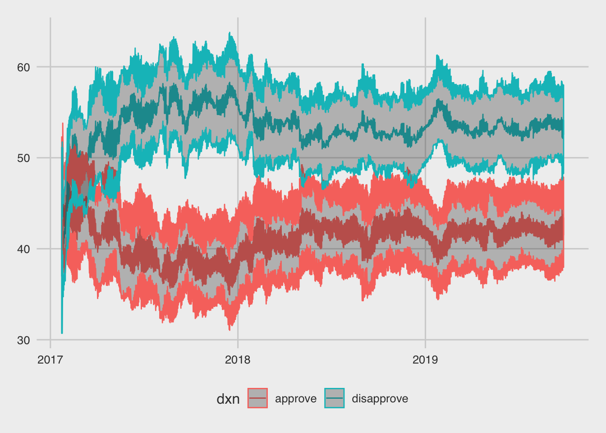
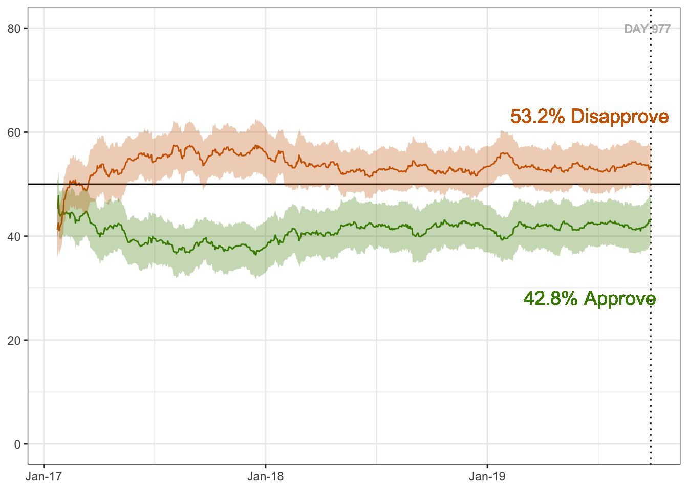

Trump’s Approval Ratings
Ellen Cheng
Original Figure
For this exercise, I tried to recreate a graph of how Trump’s approval ratings have changed over time. The figure and associated description can be found here.
The figure is shown below. It’s an interactive figure, and I couldn’t figure out how to download it as a static figure so I just saved a screenshot.

Original Data
I downloaded the data from the FiveThirtyEight data page and saved it to the working directory
Load R Packages
Import and check the data
## Observations: 2,934
## Variables: 10
## $ president <chr> "Donald Trump", "Donald Trump", "Donald Trum…
## $ subgroup <chr> "Voters", "Adults", "All polls", "Voters", "…
## $ modeldate <chr> "9/27/2019", "9/27/2019", "9/27/2019", "9/26…
## $ approve_estimate <dbl> 43.44145, 41.51170, 42.75793, 43.47630, 41.5…
## $ approve_hi <dbl> 47.85355, 45.06223, 47.38079, 47.91279, 45.0…
## $ approve_lo <dbl> 39.02934, 37.96117, 38.13507, 39.03980, 37.9…
## $ disapprove_estimate <dbl> 52.52788, 54.12260, 53.21782, 52.52885, 54.1…
## $ disapprove_hi <dbl> 56.78117, 57.99216, 57.47733, 56.80769, 57.9…
## $ disapprove_lo <dbl> 48.27458, 50.25303, 48.95831, 48.25001, 50.2…
## $ timestamp <chr> "09:40:32 27 Sep 2019", "09:39:29 27 Sep 201…Based on my glimpse of the data, here are the things I will I want to do next:
- Check ranges of values in each category, to see if there’s anything funny.
- For the variables ‘president’ and ‘subgroup’, check the levels in each variable
- I think ‘modeldate’ is the x-axis in the figure. I’ll have to look at the data to confirm
- I’ll want to tidy the data. I could probably just use a different geom_line for ‘approve_estimate’ and for ‘disapprove_estimate’, but just for practice I’ll create a new column called ‘dxn’ with the values ‘approve’ or ‘disapprove’. I will then be able to use the color aesthetic by ‘dxn’)
dat$modeldate <- as.Date(dat$modeldate, "%m/%d/%Y") # convert to date format
range(dat$modeldate) # dates range from Jan 23, 2017 to Sept. 27, 2019. That matches what the figure shows.## [1] "2017-01-23" "2019-09-27"## [1] "Donald Trump"## [1] "Adults" "All polls" "Voters"## approve_estimate approve_hi approve_lo disapprove_estimate
## Min. :34.93 Min. :38.82 Min. :31.04 Min. :37.00
## 1st Qu.:39.61 1st Qu.:43.76 1st Qu.:35.39 1st Qu.:52.61
## Median :41.30 Median :45.49 Median :37.10 Median :53.43
## Mean :41.00 Mean :45.28 Mean :36.72 Mean :53.54
## 3rd Qu.:42.39 3rd Qu.:46.92 3rd Qu.:38.00 3rd Qu.:54.71
## Max. :48.62 Max. :53.80 Max. :43.43 Max. :58.29
## disapprove_hi disapprove_lo
## Min. :43.29 Min. :30.71
## 1st Qu.:56.75 1st Qu.:48.44
## Median :57.71 Median :49.24
## Mean :57.87 Mean :49.20
## 3rd Qu.:59.15 3rd Qu.:50.35
## Max. :63.78 Max. :54.02# Rearrange the data
dat2 <- dat %>%
dplyr::select(-president, -timestamp) %>% # don't need these two columns
gather(key = "temp", value = "rating", -subgroup, -modeldate)
dat2[, c("dxn", "estim_type")] <- str_split(dat2$temp, pattern = "_", simplify = TRUE)
dat2$temp <- NULL # remove this variable
dat3 <- dat2 %>%
spread(key = estim_type, value = rating) # now I'm spreading out the estimates into 3 columns (estimate, hi, lo) so I can create the confidence bands with geom_ribbon. This probably isn't the most efficient way to get the data in this format, but it's a way I can understand in my head
dat3$dxn <- factor(dat3$dxn)
# Check the final data
glimpse(dat3) # looks good, I think## Observations: 5,868
## Variables: 6
## $ subgroup <fct> Adults, Adults, Adults, Adults, Adults, Adults, Adults…
## $ modeldate <date> 2017-01-23, 2017-01-23, 2017-01-24, 2017-01-24, 2017-…
## $ dxn <fct> approve, disapprove, approve, disapprove, approve, dis…
## $ estimate <dbl> 45.00000, 45.00000, 45.00000, 45.74659, 45.59516, 45.1…
## $ hi <dbl> 51.13470, 51.13470, 50.98562, 51.73221, 51.48944, 51.0…
## $ lo <dbl> 38.86530, 38.86530, 39.01438, 39.76097, 39.70088, 39.3…Make the Figure
ggplot(dat3, aes(x = modeldate, y = estimate, color = dxn)) +
geom_line() +
geom_ribbon(aes(ymin = lo, ymax = hi), alpha = 0.3) +
theme_fivethirtyeight()
WELL, that is not what I was trying for. I’ll start off by making these changes:
y-axis should go to 80 and should have
background should be white
ribbon fill should be based on ‘dxn’
remove axis titles
add a horizontal line at yintercept = 50
x-axis labels are month-year, sort of…. I’m not sure actually how to do some with month-year and others with just month
add a vertical dotted line at the current date and label it with ‘DAY …’
legend should be on right side and should show the current number
colors should be changed
and I totally forgot, I only want to plot the user-selected subgroup
I’m going to forget theme_fivethirtyeight. I think it will be easier for me to use theme_bw
current_approve <- round(dat3$estimate[dat3$subgroup == params$poll_group & dat3$dxn == "approve" & dat3$modeldate == max(dat3$modeldate)], 1)
current_disapprove <- round(dat3$estimate[dat3$subgroup == params$poll_group & dat3$dxn == "disapprove" & dat3$modeldate == max(dat3$modeldate)], 1)
ggplot(subset(dat3, subgroup == params$poll_group), aes(x = modeldate, y = estimate)) +
geom_line(aes(color = dxn), show.legend = FALSE) + # I've moved color into here because I know how to turn off the color legend from here
ylim(0, 80) + # set y-axis limits
geom_vline(xintercept = max(dat3$modeldate), linetype = "dotted") +
geom_hline(yintercept = 50) +
# geom_text(aes(x = max(dat3$modeldate), label= paste0("DAY ", max(dat3$modeldate) - (dat3$modeldate), y=20)), colour="gray") +
scale_x_date(labels = date_format("%b-%y")) + # x-axis labels as month-year. Requires package 'scales'
geom_ribbon(aes(ymin = lo, ymax = hi, fill = dxn), alpha = 0.3, color = NA, show.legend = FALSE) + # remove the color lines around ribbon and remove the legend
geom_text(aes(x = max(dat3$modeldate)-100, label= paste0(current_disapprove, "% Disapprove"), y = current_disapprove+10), colour="darkorange3", size = 5) + # Disapproval legend - I couldn't figure out how to get the text OUTSIDE of the plot, so I put it inside the plot. I played around a lot to figure out the best numbers
geom_text(aes(x = max(dat3$modeldate)-5, label= paste0("DAY ", max(dat3$modeldate) - min(dat3$modeldate)), y = 80), color = "gray", size = 3) + # label the current day (since beginning of polling)
geom_text(aes(x = max(dat3$modeldate)-100, label= paste0(current_approve, "% Approve"), y = current_disapprove-25), colour="chartreuse4", size = 5) +
scale_color_manual(values = c("approve" = "chartreuse4", "disapprove" = "darkorange3")) +
scale_fill_manual(
values = c("approve" = "chartreuse4", "disapprove" = "darkorange3"),
labels = c(as.character(current_approve), as.character(current_disapprove))) + # extract the current poll estimate
theme_bw() +
theme(legend.position = "right", # move legend to right side of figure
axis.title.x=element_blank(), # remove axis titles
axis.title.y=element_blank())
Well SHOOT, I feel like I got close but couldn’t figure out certain things, like:
how to get the ‘subgroup’ option (All polls, etc.) right on the graph instead of as part of the RMarkdown YAML
what font was used in the real figure
how to get the x-axis labels right
how to get the current approve/disapprove “legends” outside of the plot and with different colored text
I’ll have to do some more Googling to figure these things out, but it was a fun exercise to get to this point!